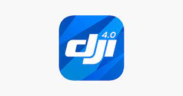

Capturez le monde d'en haut. DJI GO 4 a été optimisé pour tous les derniers produits DJI. Il s'agit notamment de la série Mavic, de la série Phantom 4 et de l'Inspire 2. Il permet la transmission d'images en temps quasi réel et le réglage des paramètres de la caméra, ainsi que l'édition et le partage d'images aériennes.
- Télécharger via l'app store:
- Cliquez ici
- Télécharger pour Android
- Cliquez ici